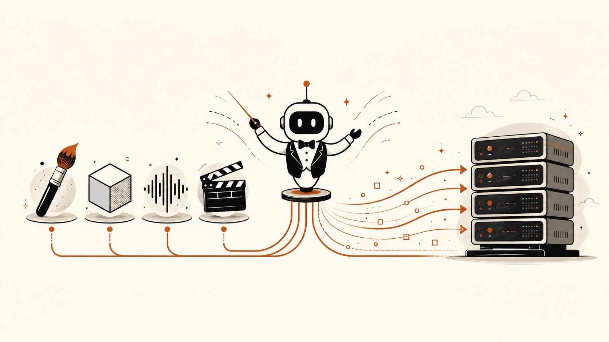

Chapter 07 · Domain Five
The Studio: Creative & Media Pipelines
Time to leave the regulated world and have some fun. Creative and media production is a different kind of opening: the constraint isn't compliance, it's throughput and taste. A studio ships hundreds of assets a week through a pipeline of tools, and the harness's job is to be the tireless coordinator that runs the pipeline while humans keep the taste. Here the Lens lights up custom tools and where it runs — specifically, a render farm.

A playful but refined flat-vector editorial illustration on a warm off-white background: a small agent "conductor" icon at the centre of a media production pipeline, waving cue lines to a row of creative tools — a paintbrush, a 3D cube, an audio waveform, a video clapperboard — whose outputs stream rightward into a stack of render-farm servers. A single rust-orange accent (#b0451d) threads the pipeline together against ink and paper; clean geometry, generous whitespace, energetic but tidy, no text baked in. Target size ~1280×720px, 16:9 landscape; the art is letterboxed into a 16:9 box, so keep the conductor and pipeline centred with safe margins.
Generate this with your image agent, then drop the file here.
The plays
Wrap each production tool — your image generator, your DAM, your transcoder, your CMS — in a custom Pi tool. Now the agent can take a brief ("cut these 40 clips to vertical, caption them, push drafts to the review board") and drive the whole chain with Bash and your tools, stopping for human approval at the taste-critical moments. The creative director stops babysitting the pipeline and starts directing it.
Risk — rights and licensing on generated assets; bake provenance into the tools.
Print/JSON mode is a headless worker, which is exactly what a render farm consumes. Fan the harness out across the farm: one invocation per shot or per asset variant, each producing structured JSON the pipeline ingests. It's the studio version of the batch-review play from law — massive parallel throughput on a repetitive transformation, with humans reviewing only the exceptions.
Risk — cost blowups at scale; meter model spend per job (it's your BYOK bill).
Recall that a Pi Package has a themes layer. A studio (or a tool vendor selling to studios) can ship a fully branded harness — its own theme, its own prompt templates encoding the house style, its own tool set — as one npm/git install. "Our studio's assistant" becomes a real, distributable product, not a shared login to someone else's chatbot.
Risk — house-style drift; version the prompt templates like code.
Why "taste stays human" is a feature, not a limitation
The winning creative products don't try to replace the director; they delete the logistics between good decisions. The harness shines at the connective tissue — moving assets, running tools, enforcing specs, chasing approvals — and hands the moments of judgment back to a person. Frame the product that way and you sidestep both the quality objection and the "will it take my job" reflex: it takes the drudgery, not the craft.
Studios are drowning in volume and tool-sprawl. A themeable harness that wraps their existing tools, conducts the pipeline, and scales into the render farm is a horizontal win dressed as a vertical product — and because you ship it as a branded Pi Package, every studio's install is subtly different and stickier than a generic SaaS seat.
Sources Pi capabilities: custom tools, Bash, print/JSON mode, Pi Packages (extensions / skills / prompt templates / themes), npm+git distribution (pi.dev/docs/latest; github.com/earendil-works/pi).